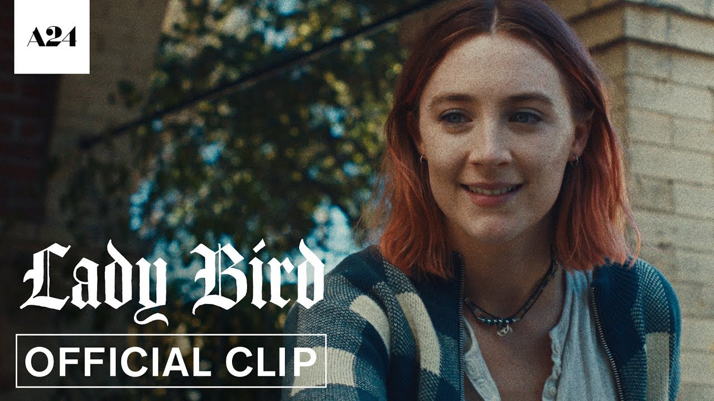

-
ABOUT LADY BIRD
-
ABOUT BIRD OF PREYS
-
Tab Three
-
Tab Four

LADY BIRD MOVIE 2019
In 2002, Christine McPherson is a senior at a Catholic high school in Sacramento, California. She gives herself the nickname "Lady Bird" and longs to attend a prestigious college in "a city with culture" despite her family's financial struggles, while her mother Marion often tells her that she is ungrateful for what she has. Lady Bird and her best friend Julie join their school theatre program, at the insistence of Lady Bird's academic counselor, where Lady Bird meets a boy named Danny O'Neill and develops a crush on him. After a series of run-ins with each other, Lady Bird and Danny eventually develop a romantic relationship, and, in a decision that disappoints Marion, Lady Bird decides to spend her last Thanksgiving before graduation with Danny's wealthy family instead of her own. After the opening night of the musical, their relationship ends when Lady Bird and Julie discover their boyfriends kissing one another in a bathroom stall.
At the behest of Marion, Lady Bird takes a job at a coffee shop; there, she meets Kyle, a young musician she recognizes from a show the previous semester, and the two begin dating. Jenna Walton, a popular girl at their school, is reprimanded by a nun for wearing a short skirt, and Lady Bird suggests that she and Jenna vandalize the nun's car with a sign that reads "Just Married to Jesus", during which they bond. As Lady Bird grows closer to Kyle and Jenna, she gradually deserts Julie, and drops out of the theater program. One day at the coffee shop, she spots Danny, and confronts him, but eventually consoles him after he expresses his struggle in coming out, and they become friends again.
At a house party, Kyle tells Lady Bird he is a virgin, and later on, she loses her virginity to him, but he later denies having said anything of the sort. When Lady Bird is suspended from school, Jenna tries to visit her at home, but goes instead to Danny's grandmother's house, which Lady Bird had called her "dream house", and had claimed was hers. Lady Bird admits to the lie, and while Jenna agrees to forgive her because of their mutual friendship with Kyle, she loses Jenna's trust.
Lady Bird discovers that her father Larry has lost his job and has been battling depression for years. She applies to East Coast colleges, despite Marion's insistence that the family would not be able to afford the fees, with the help of her father, who fills out her financial aid applications without Marion knowing. Lady Bird is accepted into UC Davis, but is upset because she feels it is too close to home. She subsequently learns that she has been placed on the wait list for a New York college but does not share the news with her mother, fearing her response. Lady Bird sets out for her high school prom with Kyle, Jenna, and Jenna’s boyfriend Jonah, but the other three decide to go to a house party instead. After hearing this, she changes her mind during the car ride and asks them to drop her off at Julie's apartment, where the two rekindle their friendship and go to the prom together.
After Lady Bird's graduation, Danny accidentally reveals to Marion about the wait list, and, as a result, Marion stops talking to her for the rest of the summer. On her eighteenth birthday, Lady Bird's father shares a cupcake with her. To celebrate reaching legal adulthood, Lady Bird buys a pack of cigarettes, a scratch-off ticket, and an issue of Playgirl magazine. She eventually passes her driving test and repaints her bedroom. Lady Bird learns she has been accepted by the New York college, and can afford the tuition with financial aid and her father's help. Her parents take her to the airport, but Marion refuses to go inside to say goodbye. She has a change of heart and drives back, only to discover Lady Bird has already gone through security.
Upon arriving in New York, Lady Bird finds several thoughtful letters in her luggage; her mother had written and discarded them, but her father had salvaged them. She begins using her birth name again. She is hospitalized after drinking heavily at a party. After leaving the hospital, she visits a Presbyterian Church during a service and is moved to tears. She then calls home and leaves an apologetic voicemail for her mother, thanking her for everything she has done for her.
LADY BIRD MOVIE 2019
Birds of Prey (and the Fantabulous Emancipation of One Harley Quinn) is an upcoming American superhero film based on the DC Comics team of the same name. The film is intended to be the eighth film in the DC Extended Universe (DCEU) and is directed by Cathy Yan and written by Christina Hodson. The ensemble cast includes Margot Robbie, Mary Elizabeth Winstead, Jurnee Smollett-Bell, Rosie Perez, Chris Messina, Ella Jay Basco, Ali Wong, and Ewan McGregor. Birds of Prey follows Harley Quinn as she joins forces with Black Canary, the Huntress, and Renee Montoya to save Cassandra Cain from Gotham City crime lord Black Mask.
Robbie, who also serves as producer, pitched the idea for Birds of Prey to Warner Bros. Pictures in 2015. The film was announced in May 2016; Hodson was hired to write the script that November, while Yan signed on to direct in April 2018. The majority of the cast and crew were confirmed by December 2018. Principal photography lasted from January to April 2019 and took place in Downtown Los Angeles, parts of the Arts District, Los Angeles, and soundstages at Warner Bros. Studios, Burbank in Burbank, California. Additional filming took place in September 2019.
Birds of Prey is scheduled to be released in the United States on February 7, 2020, by Warner Bros. Pictures.
At the behest of Marion, Lady Bird takes a job at a coffee shop; there, she meets Kyle, a young musician she recognizes from a show the previous semester, and the two begin dating. Jenna Walton, a popular girl at their school, is reprimanded by a nun for wearing a short skirt, and Lady Bird suggests that she and Jenna vandalize the nun's car with a sign that reads "Just Married to Jesus", during which they bond. As Lady Bird grows closer to Kyle and Jenna, she gradually deserts Julie, and drops out of the theater program. One day at the coffee shop, she spots Danny, and confronts him, but eventually consoles him after he expresses his struggle in coming out, and they become friends again.
In May 2016, ahead of the release of Suicide Squad, Warner Bros. Pictures announced a spinoff film focusing on Harley Quinn and several other female DC Comics heroes and villains, such as Batgirl and the Birds of Prey. Margot Robbie was attached to reprise her role as Harley Quinn, and would also serve as producer.[6][20] British screenwriter Christina Hodson was announced to be writing the film in November.[21] Robbie pitched the film to Warner Bros. in 2015 as "an R-rated girl gang film including Harley, because I was like, 'Harley needs friends.' Harley loves interacting with people, so don't ever make her do a standalone film". Robbie felt it was important for the film to have a female director. While Warner Bros. and DC Films had various other Harley Quinn-oriented films in development, Birds of Prey was the only one in which Robbie was directly involved with its development.[22]
Robbie spent three years working on Birds of Prey and continued to present it to Warner Bros. until the studio felt the project was at the point it could be made.[22] By April 2018, Warner Bros. and DC Films had finalized a deal with Cathy Yan to direct, making her the first female Asian director to direct a superhero film.[23] Robbie was confirmed to be producing the film under her LuckyChap Entertainment banner, as part of a first look deal she has with the studio; Sue Kroll and Bryan Unkless were also announced to serve as producers through their companies Kroll & Co. Entertainment and Clubhouse Pictures, respectively. Production was scheduled to begin by late 2018 or early 2019.[24] The Penguin was intended to appear in the script at one point, but was dropped to preserve his debut in a Batman solo film.[25]
LADY BIRD MOVIE 2019
Birds of Prey (and the Fantabulous Emancipation of One Harley Quinn) is an upcoming American superhero film based on the DC Comics team of the same name. The film is intended to be the eighth film in the DC Extended Universe (DCEU) and is directed by Cathy Yan and written by Christina Hodson. The ensemble cast includes Margot Robbie, Mary Elizabeth Winstead, Jurnee Smollett-Bell, Rosie Perez, Chris Messina, Ella Jay Basco, Ali Wong, and Ewan McGregor. Birds of Prey follows Harley Quinn as she joins forces with Black Canary, the Huntress, and Renee Montoya to save Cassandra Cain from Gotham City crime lord Black Mask.
Robbie, who also serves as producer, pitched the idea for Birds of Prey to Warner Bros. Pictures in 2015. The film was announced in May 2016; Hodson was hired to write the script that November, while Yan signed on to direct in April 2018. The majority of the cast and crew were confirmed by December 2018. Principal photography lasted from January to April 2019 and took place in Downtown Los Angeles, parts of the Arts District, Los Angeles, and soundstages at Warner Bros. Studios, Burbank in Burbank, California. Additional filming took place in September 2019.
Birds of Prey is scheduled to be released in the United States on February 7, 2020, by Warner Bros. Pictures.
At the behest of Marion, Lady Bird takes a job at a coffee shop; there, she meets Kyle, a young musician she recognizes from a show the previous semester, and the two begin dating. Jenna Walton, a popular girl at their school, is reprimanded by a nun for wearing a short skirt, and Lady Bird suggests that she and Jenna vandalize the nun's car with a sign that reads "Just Married to Jesus", during which they bond. As Lady Bird grows closer to Kyle and Jenna, she gradually deserts Julie, and drops out of the theater program. One day at the coffee shop, she spots Danny, and confronts him, but eventually consoles him after he expresses his struggle in coming out, and they become friends again.
In May 2016, ahead of the release of Suicide Squad, Warner Bros. Pictures announced a spinoff film focusing on Harley Quinn and several other female DC Comics heroes and villains, such as Batgirl and the Birds of Prey. Margot Robbie was attached to reprise her role as Harley Quinn, and would also serve as producer.[6][20] British screenwriter Christina Hodson was announced to be writing the film in November.[21] Robbie pitched the film to Warner Bros. in 2015 as "an R-rated girl gang film including Harley, because I was like, 'Harley needs friends.' Harley loves interacting with people, so don't ever make her do a standalone film". Robbie felt it was important for the film to have a female director. While Warner Bros. and DC Films had various other Harley Quinn-oriented films in development, Birds of Prey was the only one in which Robbie was directly involved with its development.[22]
Robbie spent three years working on Birds of Prey and continued to present it to Warner Bros. until the studio felt the project was at the point it could be made.[22] By April 2018, Warner Bros. and DC Films had finalized a deal with Cathy Yan to direct, making her the first female Asian director to direct a superhero film.[23] Robbie was confirmed to be producing the film under her LuckyChap Entertainment banner, as part of a first look deal she has with the studio; Sue Kroll and Bryan Unkless were also announced to serve as producers through their companies Kroll & Co. Entertainment and Clubhouse Pictures, respectively. Production was scheduled to begin by late 2018 or early 2019.[24] The Penguin was intended to appear in the script at one point, but was dropped to preserve his debut in a Batman solo film.[25]